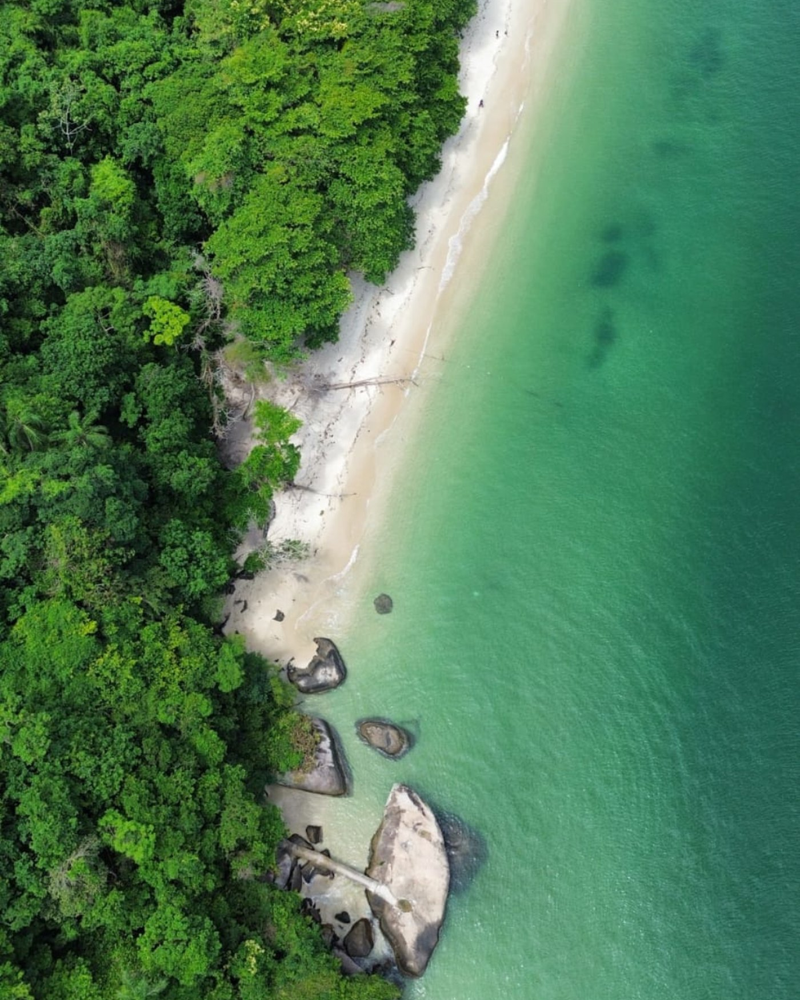
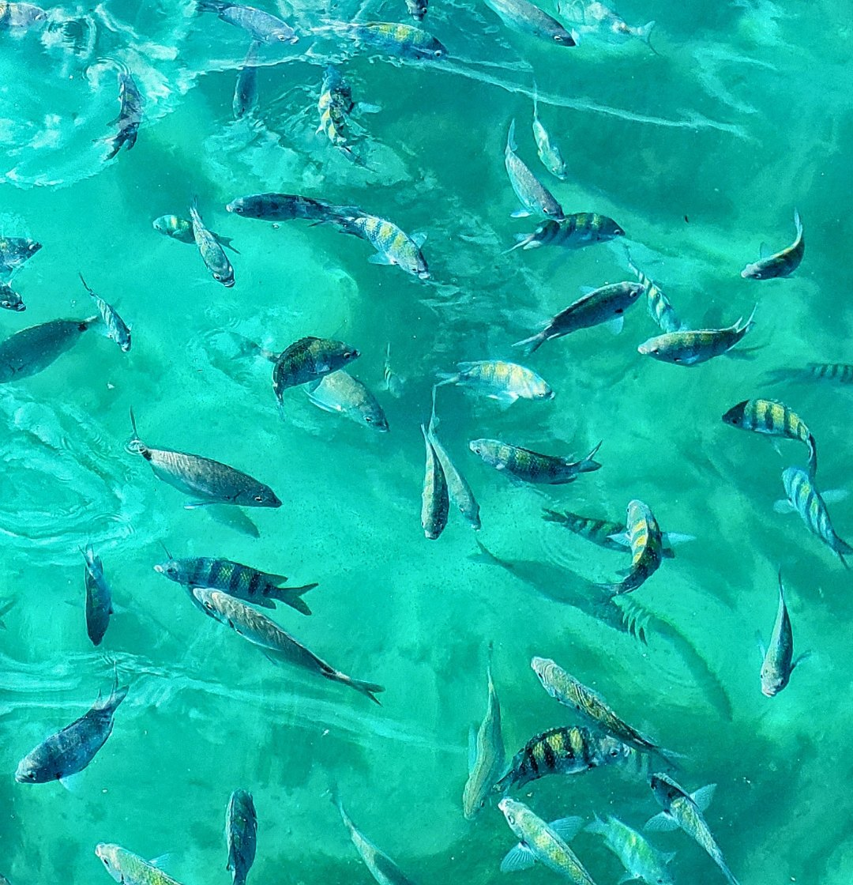
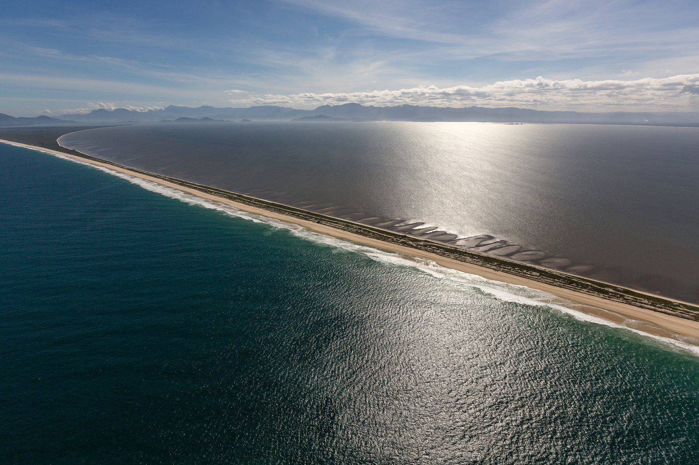
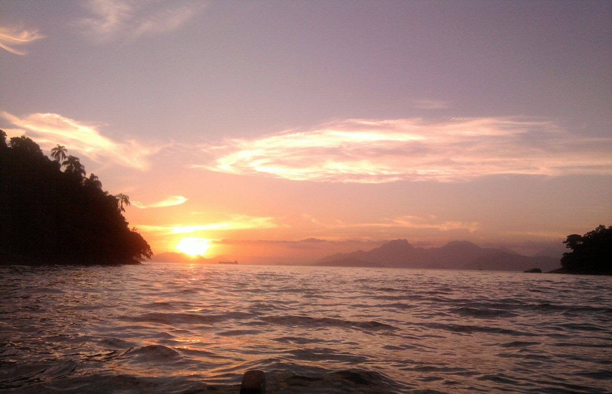

Mangaratiba


Ilhas intactas, água cristalina e bancos de areia únicos no RJ — e a travessia rápida para a Ilha Grande, tudo saindo de Mangaratiba.
Faça um passeio de barco em Mangaratiba pelas ilhas mais preservadas da baía: Ilha da Guaíba, Ponta da Pombeba (na Restinga da Marambaia) e Jaguanum. Você escolhe táxi boat ou lancha, no modo privativo (aluguel do barco para o seu grupo) ou compartilhado (por pessoa), com saída do Centro de Mangaratiba ou de Ibicuí. E, do mesmo cais, também sai a travessia para a Ilha Grande.


Um banco de areia banhado pelo mar dos dois lados — único no Rio de Janeiro.
Ver roteiro e valores
Praias abrigadas, boa estrutura e almoço garantido o ano todo.
Ver roteiro e valores
A forma mais rápida de chegar à Vila do Abraão: Flex Boat saindo do Centro de Mangaratiba, em cerca de 40 minutos, com três saídas por dia em cada sentido.
Ver a travessiaChegou na Vila do Abraão? Da ilha saem os nossos roteiros pelas praias mais bonitas de Ilha Grande e Angra — Lagoa Azul, Praia do Dentista, Aventureiro, Gruta do Acaiá e mais.

Lagoa Azul e os pontos exclusivos da Costa Norte, fora do roteiro de todo mundo.
Ver roteiro
Lagoa Azul, Lagoa Verde e as preferidas da Costa Norte, sobre águas tranquilas e cristalinas.
Ver roteiro
As ilhas mais desejadas de Angra: água cristalina, praias de cartão-postal e muito snorkel.
Ver roteiro

Praia dos Meros, Lagoa Verde e Araçatibinha: a combinação que só a Vou de Barco faz.
Ver roteiro
Um salão de pedra à beira-mar com água que parece brilhar, para quem já fez os clássicos.
Ver roteiroIda e volta direto para a Praia da Tapera, na Ilha da Guaíba — sem roteiro: só ida, praia e volta no horário combinado.
Do Centro de Mangaratiba ou de Ibicuí. Buscamos em outros pontos (Saí, Muriqui, Itacuruçá e outros) com valor sob consulta.
No privativo, o barco é exclusivo do seu grupo (até 12 pessoas, ou até 14 na lancha sob avaliação) e o preço é por barco. No compartilhado, você reserva por pessoa e divide o barco com outros passageiros.
O táxi boat é mais em conta; a lancha é mais rápida e confortável. Nos dois casos a experiência do roteiro é a mesma — a gente ajuda você a escolher pela sua data e grupo.
Depende do que você procura: o Super Guaíba é mais curto e tranquilo (~4h); o Super Pombeba tem o banco de areia único da Pombeba (6-7h); e a Volta em Jaguanum é a mais confortável, com boa estrutura e almoço garantido o ano todo. Fale com a gente que ajudamos a escolher.
Feriados, Natal, Réveillon e janeiro podem ter acréscimo. Faça sua cotação pelo WhatsApp que passamos o valor exato para a sua data.
Depende do roteiro e do formato. No compartilhado, a partir de R$ 120 por pessoa; no privativo (aluguel do barco só para o seu grupo), a partir de R$ 1.200 em táxi boat. O Super Guaíba, mais curto, sai a partir de R$ 1.200; Pombeba e Jaguanum, mais completos, a partir de R$ 1.600. Faça sua cotação pelo WhatsApp.
Sim. No modo privativo, você aluga o barco (táxi boat ou lancha) só para o seu grupo, com marinheiro e roteiro incluídos. É ideal para famílias, aniversários e grupos de amigos que querem o dia no mar sem dividir a embarcação.